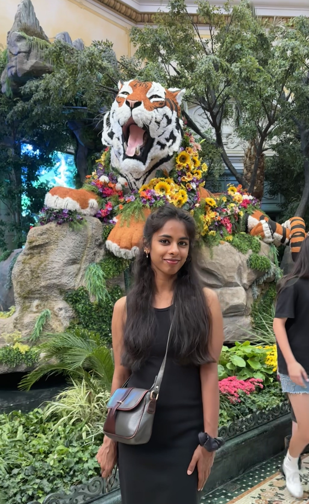
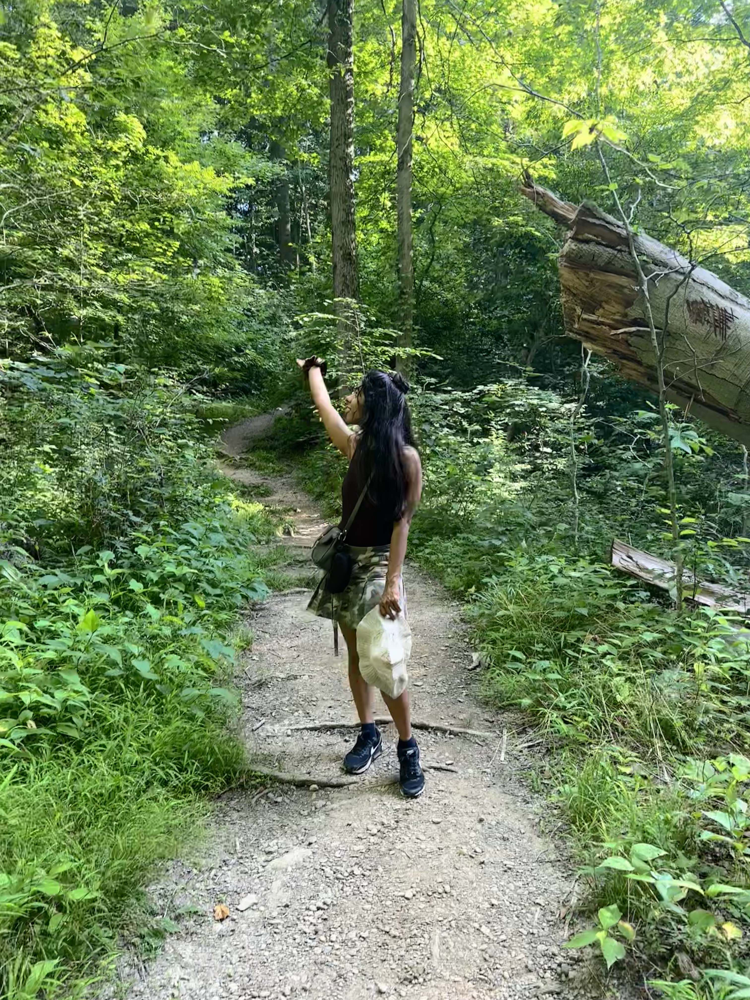
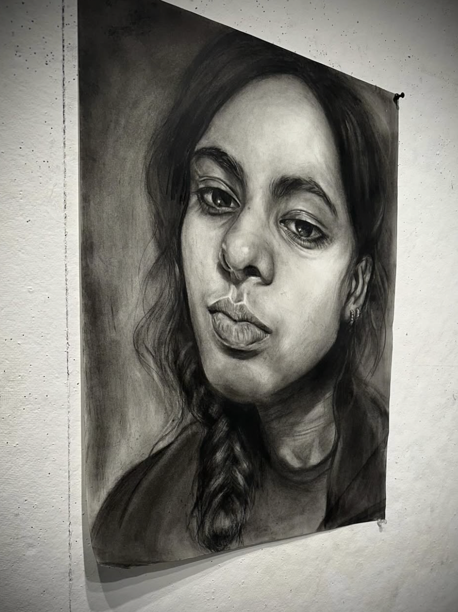

Thoughtful technical work
Web apps, data tools, AI experiments, and systems projects with clean explanations and useful demos.
About me
I am a computer science student who loves the overlap between analytical thinking and creative expression. I like building tools that feel useful and humane, making art that lets me experiment with color and texture, and creating spaces where students feel invited to participate.
This portfolio is a living home for my technical projects, artwork, student leadership initiatives, recipes, workouts, hikes, photography, and other small curiosities. Replace this paragraph with your actual story: where you study, what you are learning, what kind of work excites you, and what you are looking for next.



What I care about
I am drawn to projects where the technical choices, visual design, and community impact all matter. I like learning deeply enough to make something clearer for the next person.
For a more formal overview, you can also open my resume.
Web apps, data tools, AI experiments, and systems projects with clean explanations and useful demos.
Visual studies, sketchbook pages, photography, and art experiments that keep the portfolio warm and personal.
Programs, events, mentoring, and cultural initiatives that help people find each other and try new things.
Mission
Use these placeholders to describe the themes that guide your work and the kind of impact you want your portfolio to communicate.
Write about your interest in trustworthy systems, privacy, responsible technology, cyber safety, or making digital spaces feel more secure for real people.
Describe how art, design, and experimentation shape the way you solve technical problems and communicate ideas.
Share how movement, food, nature, and balance influence your leadership style, learning habits, and creative energy.